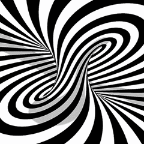

 I don't want to talk any more. I don't want to talk any more. I don't want to talk any more. I don't want to talk any more. I don't want to talk any more. I don't want to talk any more. I don't want to talk any more. I don't want to talk any more. I don't want to talk any more. I don't want to talk any more. I don't want to talk any more. I don't want to talk any more. I don't want to talk any more. I don't want to talk any more. I don't want to talk any more. I don't want to talk any more. I don't want to talk any more. I don't want to talk any more. I don't want to talk any more. I don't want to talk any more. I don't want to talk any more. I don't want to talk any more. I don't want to talk any more. I don't want to talk any more. I don't want to talk any more. I don't want to talk any more. I don't want to talk any more. I don't want to talk any more. I don't want to talk any more. I don't want to talk any more. I don't want to talk any more. I don't want to talk any more. I don't want to talk any more. I don't want to talk any more. I don't want to talk any more. I don't want to talk any more. I don't want to talk any more. I don't want to talk any more. I don't want to talk any more. I don't want to talk any more. I don't want to talk any more. I don't want to talk any more.